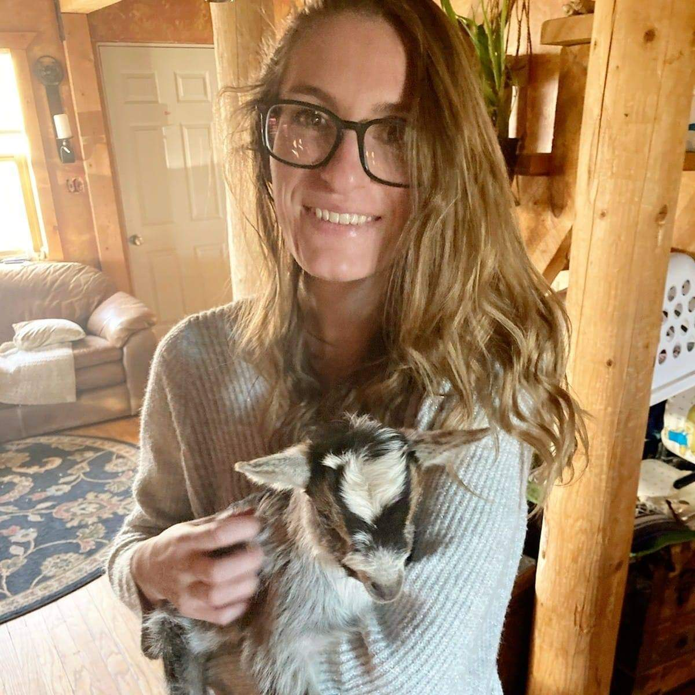

Rebecca Barrett is a Full-Stack Web Developer with an eye for design and a passion for learning. She earned a certificate in Full-Stack Development from the University of Denver, where she learned CSS, JavaScript, React.js, Node.js, MongoDB and mySQL skills. Rebecca has always been a hard worker and has worked through both high school and junior college while graduating both at the top of her class and participating in various extracurricular events. Her background in art allows for an eye for layouts and CSS styling as seen on several projects including her Crystal Collector application. Rebecca is a natural-born problem solver and loves to figure out even the toughest issues. This hardworking attitude and ability to pick up new concepts quickly, combined with her customer-centric mentality help her to deliver the applications our clients need most.
Rebecca is from a small town in South-Eastern Colorado about 3 and a half hours southeast from Denver and is currently living in a tiny studio apartment in Arvada with her cat Allie. She is truly an artist at heart and loves to mess with Pastels and Acrylics in particular. You can also find her tending to her various houseplants, baking (she makes a mean cinnamon roll) or just spending time with her friends and family.